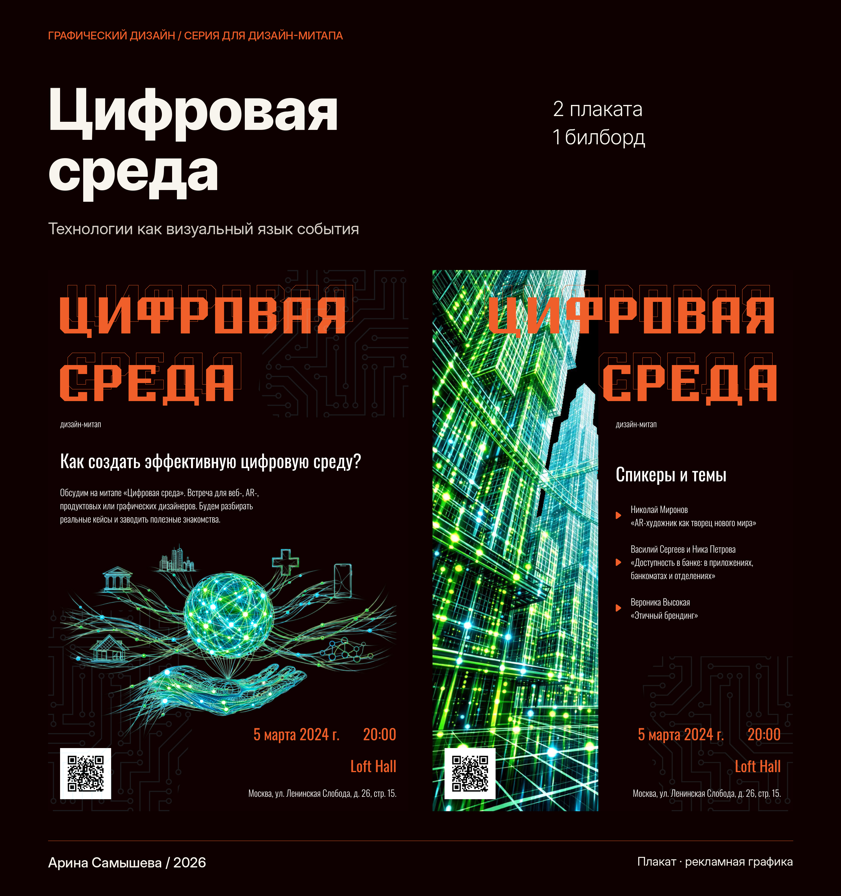
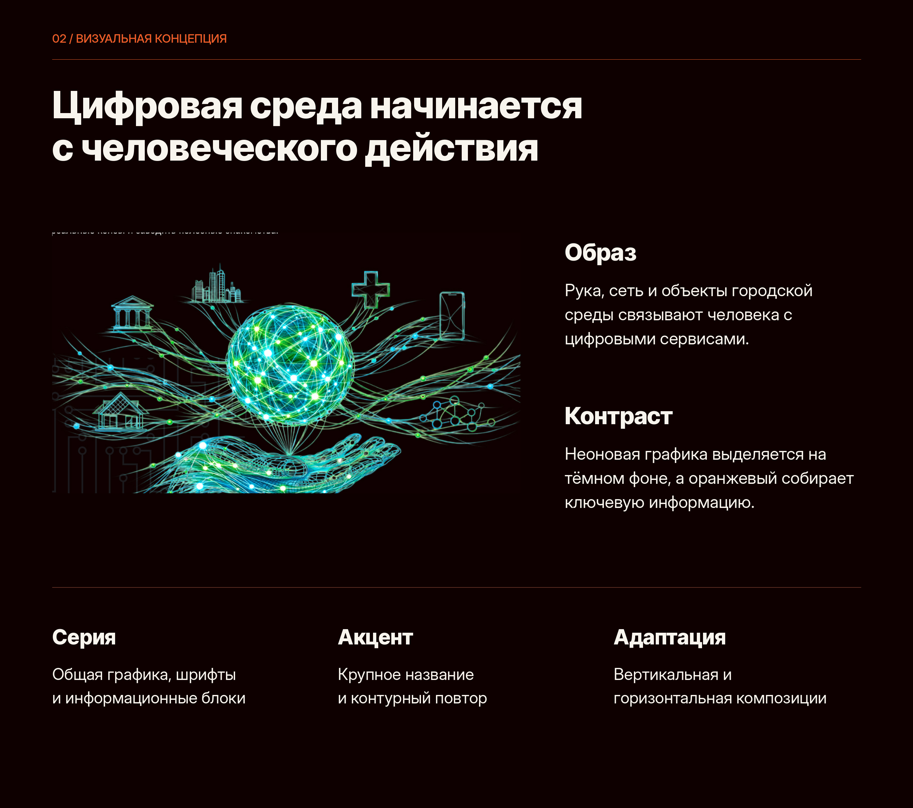
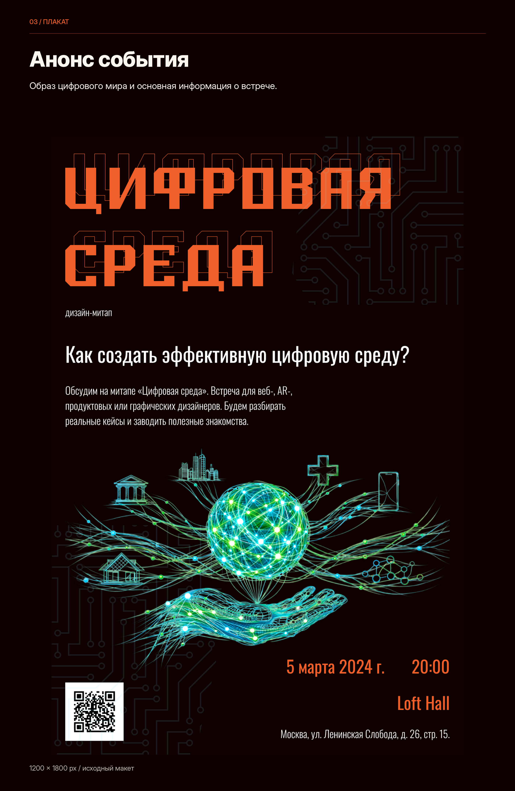
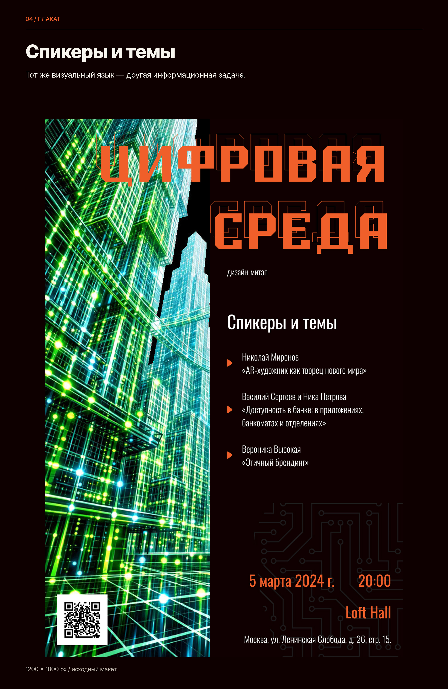
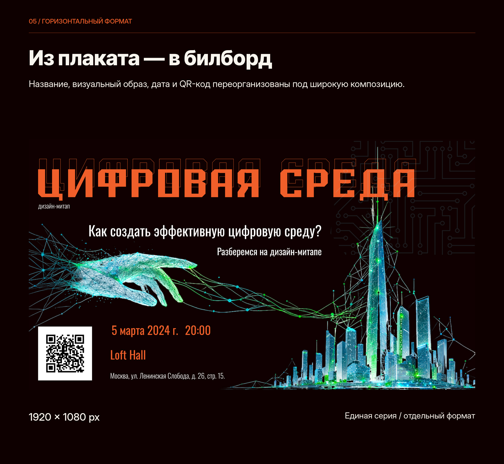
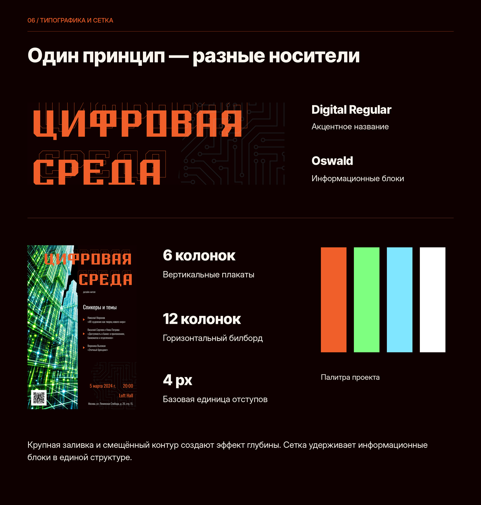
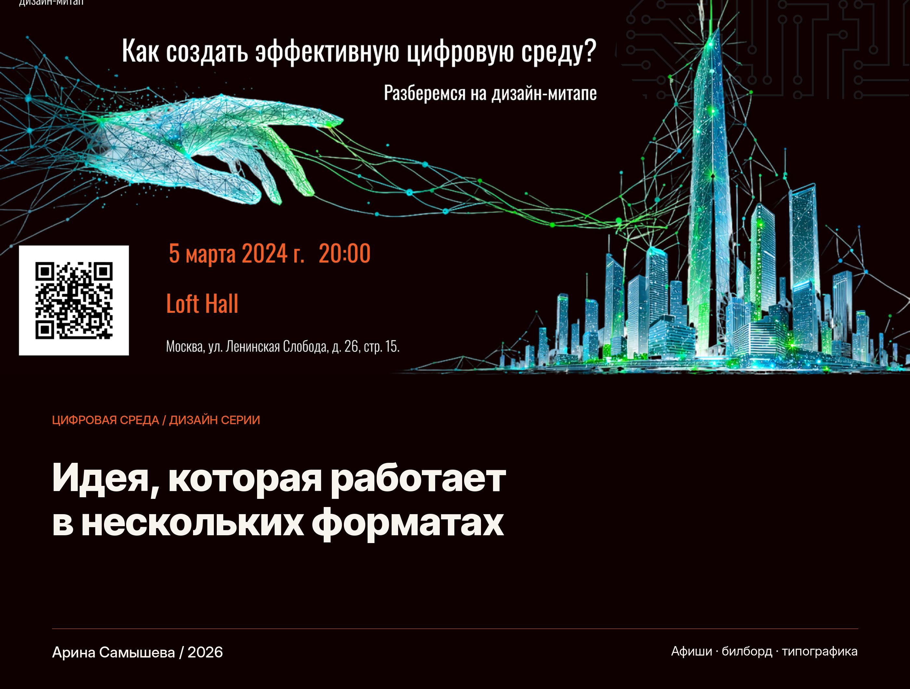

Перейти к содержимому
Главная
Мои работы
Контакты
Арина Самышева
Цифровая среда — плакаты и билборд







Предыдущий проект
← Moscow Fjord
Все работы
Следующий проект
Японские традиционные дома →
Масштаб 100%
Оригинал ↗
Закрыть ×